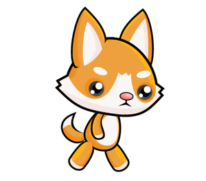
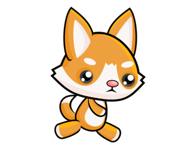
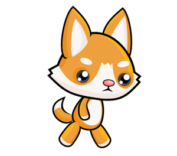
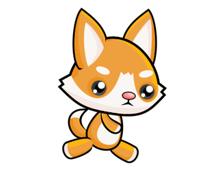
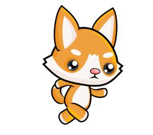
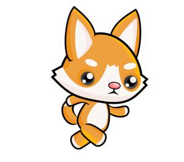

Како се праве анимације¶
Једноставан начин да остваримо анимацију је да део програма који исцртава један фрејм сместимо у одвојену функцију. Ту функцију ћемо у програмима по правилу називати nov_frejm, мада она може да има и било које друго име.
Мењање цртежа¶
Да бисмо добили анимацију, битно је да функција која црта фрејм при следећем позиву прави цртеж који је нешто другачији од претходног, јер без промене нема анимације. Да би нови цртеж могао да буде другачији, само цртање треба да зависи од вредности неких променљивих. Промена вредности променљивих од којих зависи цртање, довешће до другачијег цртежа.
На пример, ево како можемо да направимо програм који наизменично приказује мање и веће срце.
У функцији се користи променљива indeks_slike, која добија само вредности 0 или 1. Ова променљива се користи као индекс (редни број) слике у листи слика, која се састоји од две слике. На основу променљиве indeks_slike се у програму одлучује која од две слике ће бити приказана. При сваком новом извршавању функције nov_frejm, променљива indeks_slike мења вредност (ако је била 0, добија вредност 1 и обрнуто), па се тиме мења и слика која ће бити приказана.
За променљиве од којих зависи цртање кажемо да описују сцену. Таквих променљивих може бити једна или више. У примеру са срцем сцену описује једна променљива, а то је променљива indeks_slike.
У општем случају, када правимо нови фрејм анимације, користимо старе вредности променљивих које описују сцену, да бисмо израчунали њихове нове вредности. При томе, нове вредности могу, а не морају да буду различите од старих. Овај поступак зовемо ажурирање сцене.
Глобалне променљиве¶
Да бисмо у функцији nov_frejm могли да ажурирамо сцену, потребно је да променљиве које описују сцену имају вредности и пре и после извршавања функције nov_frejm. Због тога ове променљиве треба да формирамо (да им доделимо прве вредности) у главном делу програма. Када у функцији користимо такве променљиве (формиране ван функције), зовемо их глобалне променљиве. За разлику од њих, променљиве направљене у самој функцији зовемо локалне променљиве, и оне постоје само за време извршавања функције.
Када глобалним променљивама додељујемо вредности у функцији, треба да на почетку функције назначимо да се ради о променљивама које већ постоје и формиране су ван те функције. За променљиву indeks_slike из горњег примера то смо постигли писањем global indeks_slike у првом реду функције. Да променљиву нисмо најавили као глобалну, Пајтон би при додели вредности променљивој покушао да формира нову локалну променљиву са истим именом.
Када има више глобалних променљивих које намеравамо да мењамо у некој функцији, после речи global треба навести имена свих таквих променљивих, раздвојене зарезима.
Брзина анимације¶
Брзина анимације је одређена трајањем сваког фрејма, односно бројем фрејмова који се приказују у јединици времена. За брзину смењивања фрејмова се користи скраћеница (јединица мере) фпс, што значи “фрејмова по секунди” (fps - frames per second). Када правимо анимацију, једна од ствари које треба да урадимо је да изаберемо брзину приказивања и да је задамо нашем програму као број фремова по секунди, које ђелимо да програм направи и прикаже.
У претходном програму смо користили 2 фрејма по секунди, чиме смо добили ритам сличан ритму куцања срца. При томе смо јасно разликовали два фрејма који се наизменично појављују. Да бисмо добили утисак покрета, потребне су само веће брзине и више слика.
Уобичајено је да се за анимацију покрета користи најмање 15 фпс, јер при мањим брзинама приказивања покрет некоме може да делује испрекидано. Тако на пример ТВ емисије углавном користе 24 фпс, док се у данашње време за видео игре сматра да испод 30 фпс доживљај није довољно добар. Још брже анимације могу појединим посматрачима да дају још бољи ефекат, али су и скупље за прављење и приказивање.
Уколико у нашим програмима задамо веома велику брзину приказивања, може се догодити да наш рачунар не може да постигне такву брзину генерисања слика, а ни такву брзину приказивања. У том случају неће доћи до грешака, али ће стваран (ефективан) број фрејмова по секунди бити мањи (онај који рачунар може да постигне).
Анимација трчања из уводног текста може да се постигне програмом који је врло сличан примеру са срцем. Једина суштинска разлика је што се користи већи број слика (осам уместо две) и већа брзина приказивања.
 





 


Испробајте различите брзине приказивања и видите како тај параметар утиче на изглед анимације. Наравно, за укупан доживљај је осим броја фрејмова у секунди важно и колико се разликују узастопне слике (већи број слика са мањим разликама даје бољи ефекат, али за то је протребна и већа брзина приказивања).
Резимирајмо шта треба да урадите да бисте направили анимацију:
дефинишите глобалне променљиве које описују сцену (ти ће се подаци мењати током анимације);
дефинишите функцију
nov_frejmкоја ажурира податке о ликовима и објектима на сцени, а затим исцртава сцену (не заборавите да на почетку функције, после речиglobalнабројите глобалне променљиве којима мењате вредност);на крају програма позовите функцију
petljapg.frame_loop(fps, nov_frejm), где је fps жељени број фрејмова у секунди. Функција frame_loop, поред свега што је обављала функција wait_loop, још и омогућава да се функција nov_frejm позива задати број пута у секунди. Зато ћемо у анимацијама програме завршавати функцијом frame_loop уместо wait_loop().
Анимације - питања¶
-
Повежите трајање фрејма са бројем фрејмова у секунди.
Покушај поново!
- 10 фпс
- 100 милисекунди
- 20 фпс
- 50 милисекунди
- 50 фпс
- 20 милисекунди
- 100 фпс
- 10 милисекунди

{kind=link}
{kind=link}
{kind=link}
Задатак - предлог: Ако желите, пробајте да направите Пајтон програм који ће у круг да приказује ваше одабране фотографије или неке друге слике по вашем избору (ако су вам све слике исте величине, већ сте научили све што вам треба). Имајте на уму да брзина приказивања може да буде и мања од 1 фпс и не мора да буде цео број (али треба да буде позитиван). На пример, у програму “слајд-шоу” који вам предлажемо, природно се јавља потреба да приказивање сваке слике траје и дуже од једне секунде.
Да бисте сваки фрејм приказивали по две секунде, колики број фрејмова у секунди треба задати у програму?
- indeks_slike = indeks_slike + 1 % br_slika
- Покушајте поново
- indeks_slike = (indeks_slike % br_slika) + 1
- Покушајте поново
- indeks_slike = (indeks_slike + 1) % br_slika
- Тачно
- indeks_slike = indeks_slike % (br_slika + 1)
- Покушајте поново
Q-108: У примеру “трчање” је било потребно да променљива indeks_slike узима редом у круг само оне вредности које одговарају позицијама слика у листи. У случају када имамо осам слика, те вредности су 0, 1, 2, 3, 4, 5, 6, 7, 0, 1, 2, итд. У општем случају, за n слика вредности су 0, 1, 2, … n-1, 0, 1, 2 итд.
Подсетимо се, оператор % означава операцију рачунања остатка при дељењу. Помоћу ове операције можемо краћим записом да постигнемо исти циљ. Која од следећих наредби може равнопрано да замени овај део програма?
indeks_slike = indeks_slike + 1 # prelazimo na sledecu sliku if indeks_slike == br_slika: # ako nema sledece slike ... indeks_slike = 0 # vracamo se na prvu sliku